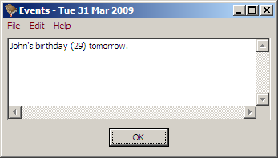

The super simple birthday and anniversary reminder program.
BDay is a simple program to help you track birthdays and anniversaries. It runs when you start or log in to your computer, displays any events that are coming up, and then exits when you click OK. It does not hang around in the system tray or as a background process taking up your computer's resources. If there are no events to be displayed, then you wont even see BDay run.

BDay is available for both Windows and Linux.
See the Home Page for more information, or the Downloads page for source and binaries.
See the file INSTALL for manual installation instructions, or the Downloads page for installer versions.
Copyright 2009 Evan McLean http://evanmclean.com/
This program is free software: you can redistribute it and/or modify it under the terms of the GNU General Public License as published by the Free Software Foundation, either version 3 of the License, or (at your option) any later version.
This program is distributed in the hope that it will be useful, but WITHOUT ANY WARRANTY; without even the implied warranty of MERCHANTABILITY or FITNESS FOR A PARTICULAR PURPOSE. See the GNU General Public License for more details.
See COPYING for the full text of the GNU General Public License.